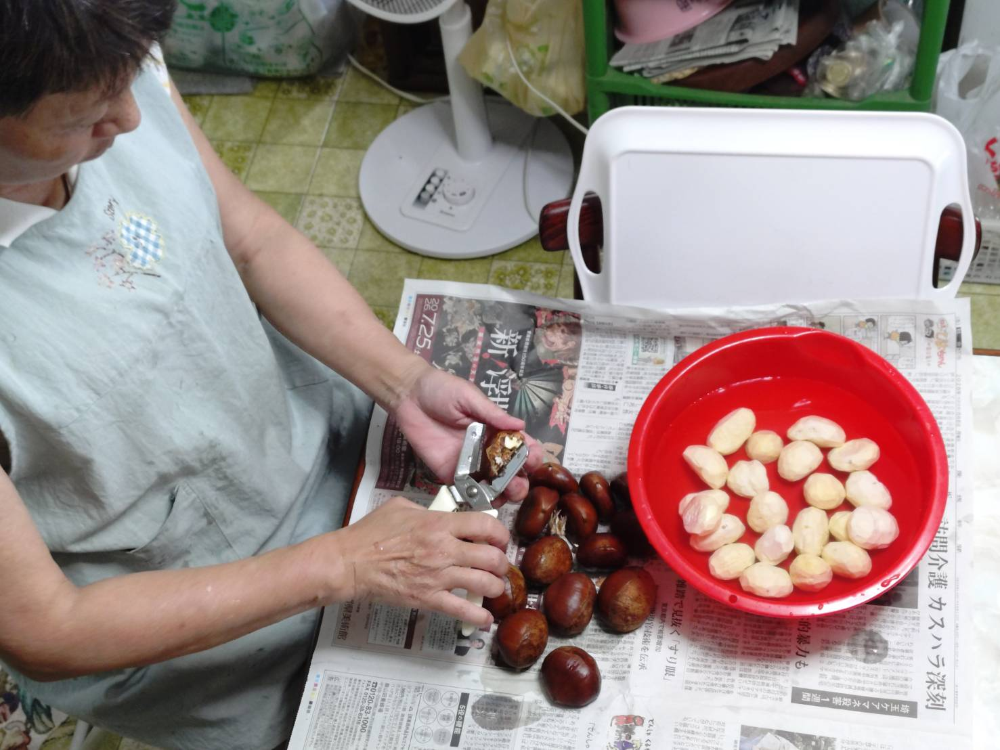
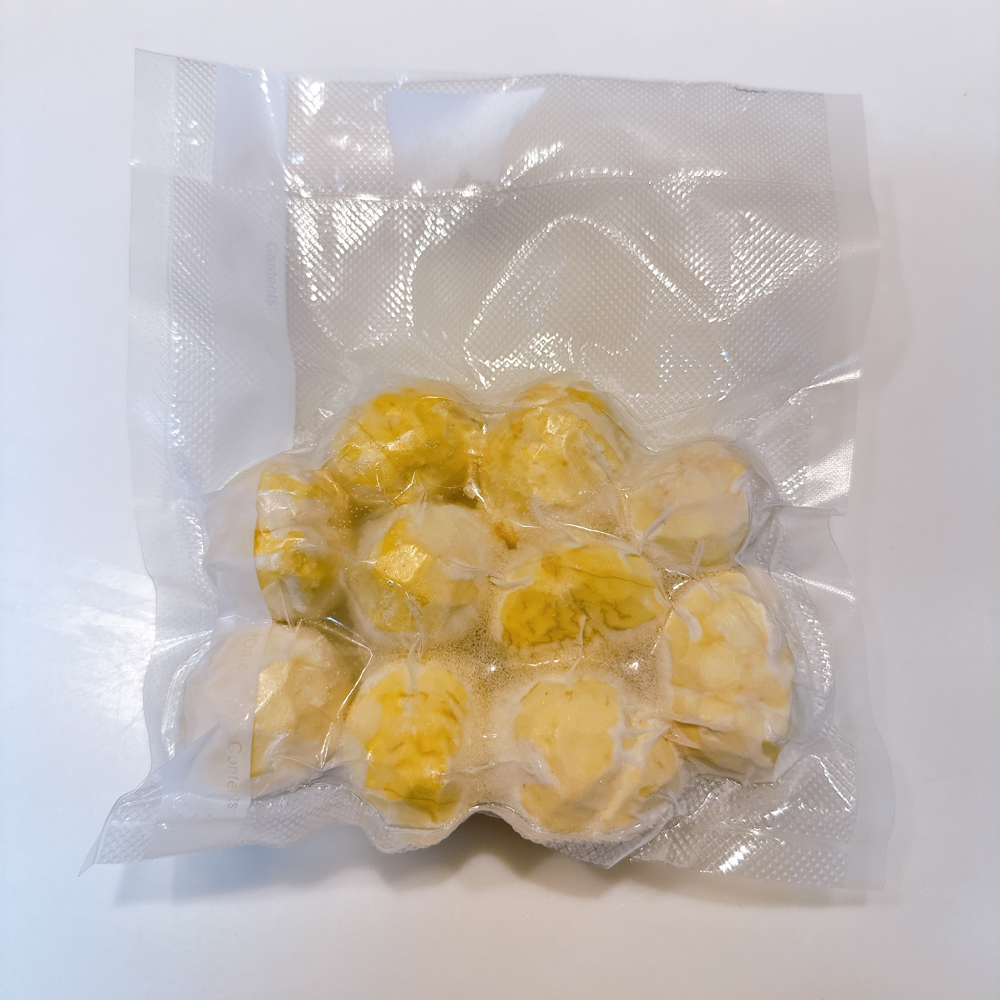

05 / PRODUCTS
商品・オンラインショップ
愛媛の山あい、三代続く栗農園から、驚くほど大粒の栗をお届けします。私たちが丹精込めて育てるのは、豊かな甘みと香りが自慢の「銀寄」「石鎚」「大峰」「筑波」です。
KOYASHIKI SELECT
銀寄・石鎚・大峰・筑波、愛媛の大玉栗
収穫の9割以上が3L以上という山の恵みを、食卓へ

一粒ずつ、手でむく
栗の皮むきは、今やそのほとんどが機械で行われます。しかし私たちは、あえて一粒ずつ、人の手で丁寧にむいています。機械ではどうしても失われてしまう、栗本来のふっくらとした形と豊かな風味を、そのままお届けしたいからです。気の遠くなるような時間と手間がかかりますが、この実直な手仕事こそが、私たちの誇りです。

むき栗・真空冷凍
3L以上の大粒栗を一つひとつ丁寧にむき、採れたての風味を閉じ込めて真空冷凍しました。冷凍庫から出してすぐ使えるので、面倒な下ごしらえなしで、いつでも手軽に本格的な栗料理が食卓を彩ります。

生冷蔵・大玉栗
採れたての瑞々しさをそのままに、大粒の生栗を冷蔵でお届けします。ご自身の手でじっくり火を通すことで、旬ならではの豊かな香りと格別の甘み、ほくほくの食感を心ゆくまでお楽しみいただけます。
SPECIAL VARIETY
幻の品種 K2(改)俗称 ── お楽しみに
木の本数がまだ少なく収穫量が限られる、幻の品種「K2(改)俗称」。販売できる量が確保できた年にだけ、数量限定でお届けします。もし出会えたなら、それは奇跡にも近い幸運な一期一会です。どうぞ楽しみにお待ちください。